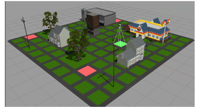
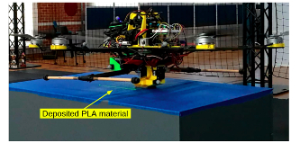
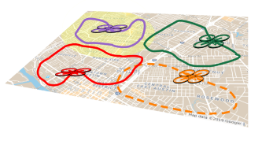

|  | In any competition, a key to a human team’s success is to be unpredictable. If a football team were to follow the same strategy to score a touchdown in every game, their competitors would exploit this information for their own advantage in the future. Can autonomous systems, like humans, act unpredictably to compete with their adversaries? Is there a limit on the unpredictability of their goal-directed behavior? Combining ideas from stochastic control and information theory, we establish the theoretical limits and computational requirements for unpredictable planning in adversarial environments. We also utilize these insights to develop efficient algorithms that enable autonomous systems to securely carry out tasks, e.g., surveillance, in the presence of adversaries. Paper Link |
|  | 3D printing of medium- to large-scale objects is often limited by the size of the 3D printer - the bigger the desired object, the bigger the 3D printer has to be. To address these limitations, we develop a 3D printing hexacopter that uses fused deposition modeling to deposit polymer materials during flight. Recently, we have demonstrated the feasibility of this approach by successfully printing contours of polylactic acid on a flat surface. Future research focuses on developing advanced control algorithms to improve the 3D printing accuracy. Paper Link |
|  | A team of mobile agents aims to agree on the true hypothesis (out of a finite set of hypotheses) that best explains a sequence of their local and possibly noisy observations. Due to mobility and a limited communication range, the team collaborates through a time-varying network topology. The goal of this research is to create a sharing protocol which: 1) Ensures that the team agrees on the correct hypothesis; 2) Is robust to a subset of compromised agents that may deliberately share wrong information to undermine the objective; 3) Has no explicit time dependence on information. |